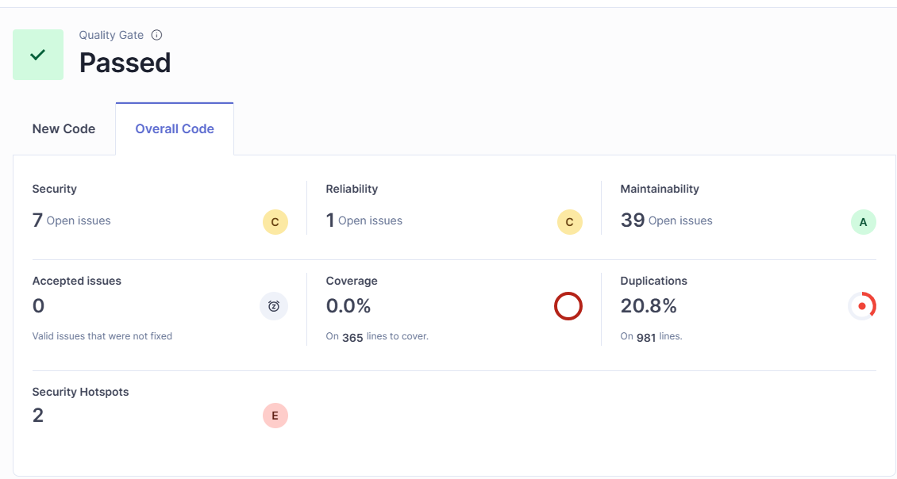
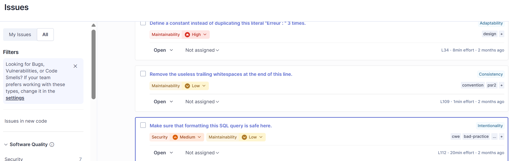
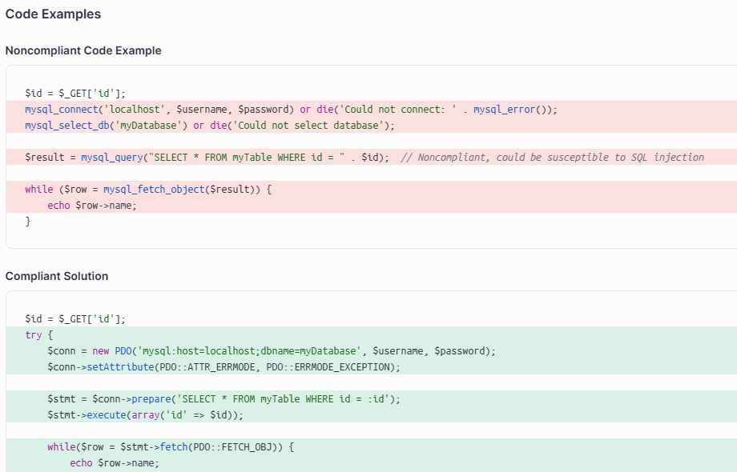
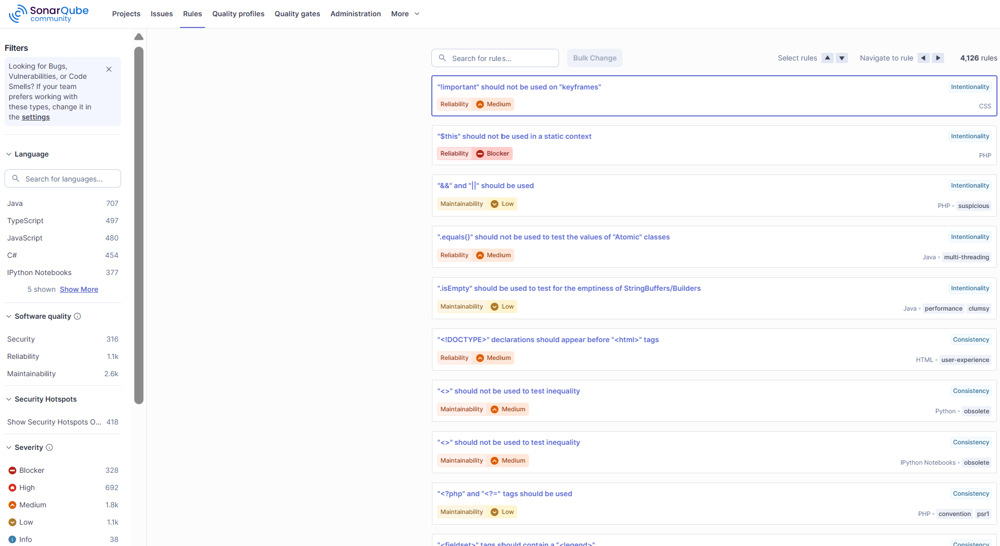
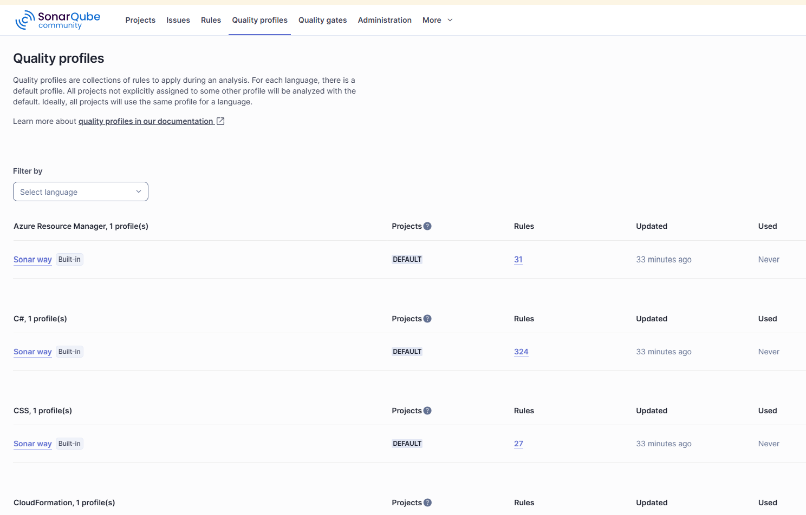
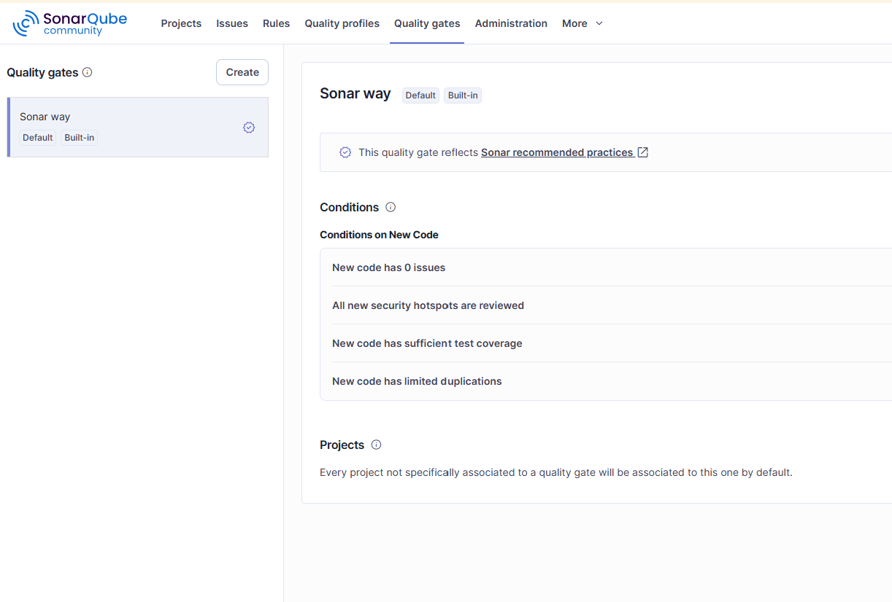

SonarQube
- Un outil d'analyse statique du code
- La détection des problèmes de qualité et de sécurité
- L'amélioration continue de la qualité du code
Déploiement de sonarQube avec Docker
docker run -d --name sonarqube -p 9000:9000 sonarqube:community
Configuration de SonarQube
Mot de passe et nom d'utilisateur par défaut : admin/admin
Exemple d'analyse

Type de problèmes détectés
- Security : Problèmes de sécurité dans le code
- Reliability : Problèmes de fiabilité dans le code.
- Maintainability : Problèmes de maintenabilité dans le code
Niveau de sévérité
- Blocker : Problèmes bloquants
- High : Problèmes de haute sévérité
- Medium : Problèmes de moyenne sévérité
- Low : Problèmes de basse sévérité
- Info : Informations
Exemple de problème détecté

Suggestion de résolution de problèmes

Rules SonarQube

Quality profil

Quality Gate
